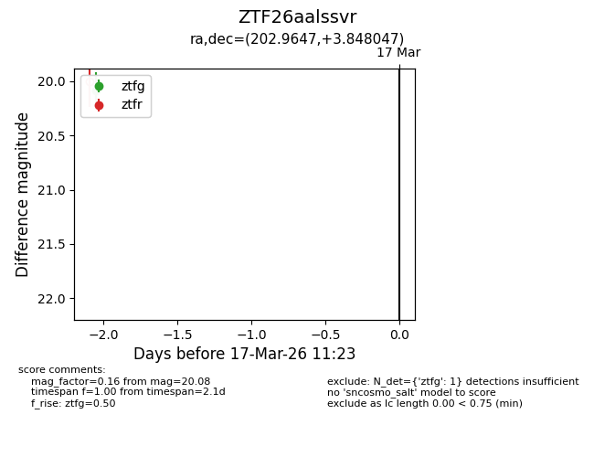
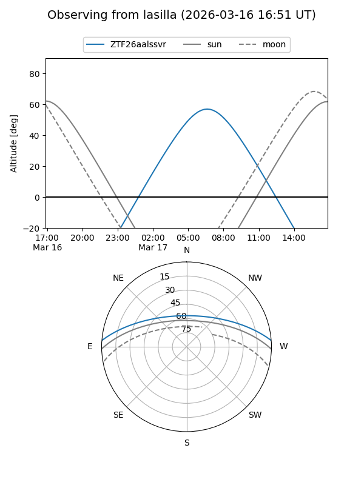
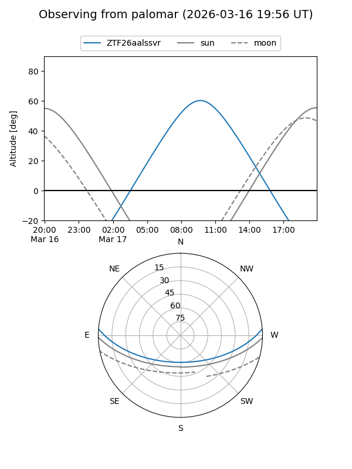

ZTF26aalssvr
Target ZTF26aalssvr at 2026-03-17 11:25
Aliases and brokers:
FINK: link
Lasair: link
ALeRCE: link
alt names
ZTF26aalssvr (ztf,fink_ztf)
Coordinates:
equatorial (ra, dec) = 202.9647,+3.84805
equatorial (HMS+DMS) = 13:31:51.52,+03:50:52.97
galactic (l, b) = (327.2068,+64.79743)
Flags:
Photometry:
last ztfg=20.08
1 ztfg detections
Lightcurve

Visibility


Additional plots